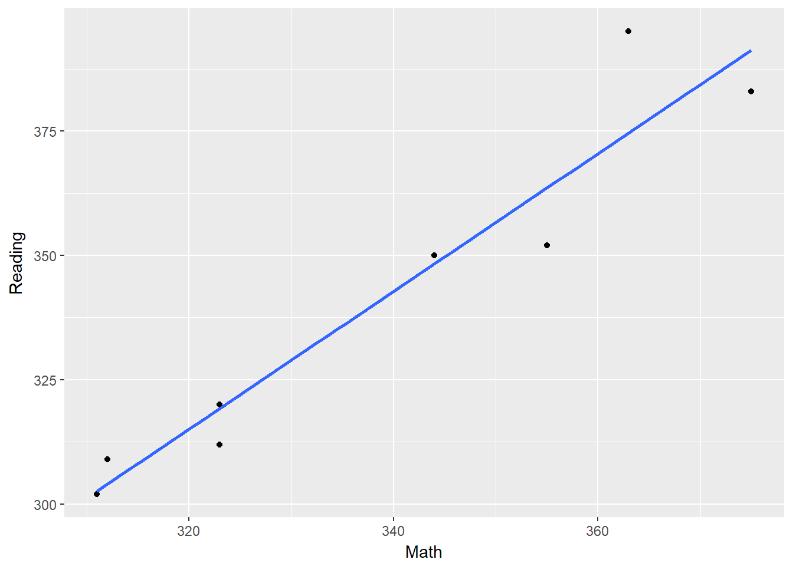

Intro
Often with education data, I need to pivot data to go from long format to wide.
library(tidyverse)
library(DBI)
library(odbc)
library(DT)
library(knitr)
con <- dbConnect(odbc::odbc(), "nicodemus")
query <- dbSendQuery(con, "select * from Demo.dbo.tbl_testScore")
testScore <- dbFetch(query)
testScore <- as_tibble(testScore)
testScore## # A tibble: 16 x 4
## personID testName testSubject scaleScore
## <dbl> <chr> <chr> <dbl>
## 1 1000 MCA-III Math 344
## 2 1000 MCA-III Reading 350
## 3 1001 MCA-III Math 323
## 4 1001 MCA-III Reading 312
## 5 1002 MCA-III Math 375
## 6 1002 MCA-III Reading 383
## 7 1003 MCA-III Math 311
## 8 1003 MCA-III Reading 302
## 9 1004 MCA-III Math 355
## 10 1004 MCA-III Reading 352
## 11 1005 MCA-III Math 323
## 12 1005 MCA-III Reading 320
## 13 1006 MCA-III Math 312
## 14 1006 MCA-III Reading 309
## 15 1007 MCA-III Math 356
## 16 1007 MCA-III Reading 365Above is a very simple table of test scores where personID is the unique identifier, and records duplicate by testSubject. How would I break out testSubject as columns and put the scaleScore in each row? Like say then to plot on a scatterplot?
Pivoting in SQL
In SQL, the syntax is the following. It’s important to note (as opposed to the diplyr option later) that this is an aggregate function. So the pivot function requires some aggregate function like MAX(), MIN(), SUM(), AVG(), etc. You choose the column to pivot out and then the field you want to place under those new columns given some aggregation. Since I know I only have one record for each student + test subject combination, I chose MAX() to just give me that one score.
select *
from Demo.dbo.tbl_testScore
pivot(
MAX(scaleScore) for testSubject in ([Math],[Reading]) --aggregate function of one column for another column, listing the unique possibilities in brackets.
) piv## # A tibble: 8 x 4
## personID testName Math Reading
## <dbl> <chr> <dbl> <dbl>
## 1 1000 MCA-III 344 350
## 2 1001 MCA-III 323 312
## 3 1002 MCA-III 375 383
## 4 1003 MCA-III 311 302
## 5 1004 MCA-III 355 352
## 6 1005 MCA-III 323 320
## 7 1006 MCA-III 312 309
## 8 1007 MCA-III 356 365There you have it! Pretty straight-forward. One major downside to pivoting in SQL is that you need to know exactly the unique values of the pivoting column. In our example, I had to hardcode Math and Reading in the brackets. But what if the pivoting column has an unknown number of values, or the data changes?
It makes sense that a database programming language wouldn’t have the function automatically pivot out all the values, as RDBMS’s are highly structed.
Pivoting in R with diplyr
In the dplyr package you can use the spread() and gather() function to pivot and unpivot columns. spread() requires that you put the pivoted column in key and the value you want to place in the pivoted columns in value.
testScore %>%
spread(key = testSubject, value = scaleScore)## # A tibble: 8 x 4
## personID testName Math Reading
## <dbl> <chr> <dbl> <dbl>
## 1 1000 MCA-III 344 350
## 2 1001 MCA-III 323 312
## 3 1002 MCA-III 375 383
## 4 1003 MCA-III 311 302
## 5 1004 MCA-III 355 352
## 6 1005 MCA-III 323 320
## 7 1006 MCA-III 312 309
## 8 1007 MCA-III 356 365Same result as above with SQL. What I struggled with the most initially with this function (coming from the SQL world) was that there needs to be unique values in the field you choose for value. The SQL solution, on the other hand, has you put an aggregate function in to ensure unique values in the new pivoted columns.
What if you don’t have unique values to pivot in R?
Let’s say in our example that a student had two Math and two Reading scores and you needed to average for each subject for each student. See the table below where the last student has two more records.
testScoreMore <- testScore %>%
add_row(personID = 1007, testName = "MCA-III", testSubject = "Math", scaleScore = 363) %>%
add_row(personID = 1007, testName = "MCA-III", testSubject = "Reading", scaleScore = 395)## # A tibble: 18 x 4
## personID testName testSubject scaleScore
## <dbl> <chr> <chr> <dbl>
## 1 1000 MCA-III Math 344
## 2 1000 MCA-III Reading 350
## 3 1001 MCA-III Math 323
## 4 1001 MCA-III Reading 312
## 5 1002 MCA-III Math 375
## 6 1002 MCA-III Reading 383
## 7 1003 MCA-III Math 311
## 8 1003 MCA-III Reading 302
## 9 1004 MCA-III Math 355
## 10 1004 MCA-III Reading 352
## 11 1005 MCA-III Math 323
## 12 1005 MCA-III Reading 320
## 13 1006 MCA-III Math 312
## 14 1006 MCA-III Reading 309
## 15 1007 MCA-III Math 356
## 16 1007 MCA-III Reading 365
## 17 1007 MCA-III Math 363
## 18 1007 MCA-III Reading 395I think the easiest thing to do, is to just do your aggregation earlier in your pipe chain, and then do your spread() after.
testScoreMore %>%
group_by(personID, testName, testSubject) %>%
summarize(scaleScore = max(scaleScore)) %>%
spread(key = testSubject, value = scaleScore)## # A tibble: 8 x 4
## # Groups: personID, testName [8]
## personID testName Math Reading
## <dbl> <chr> <dbl> <dbl>
## 1 1000 MCA-III 344 350
## 2 1001 MCA-III 323 312
## 3 1002 MCA-III 375 383
## 4 1003 MCA-III 311 302
## 5 1004 MCA-III 355 352
## 6 1005 MCA-III 323 320
## 7 1006 MCA-III 312 309
## 8 1007 MCA-III 363 395Cool! Hey, now that we have columns for each subject, is there a relationship between them?
testScoreMore %>%
group_by(personID, testName, testSubject) %>%
summarize(scaleScore = max(scaleScore)) %>%
spread(key = testSubject, value = scaleScore) %>%
ggplot(aes(x = Math, y = Reading)) +
geom_point() +
geom_smooth(method = "lm", se = FALSE)